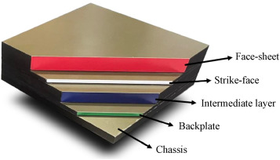
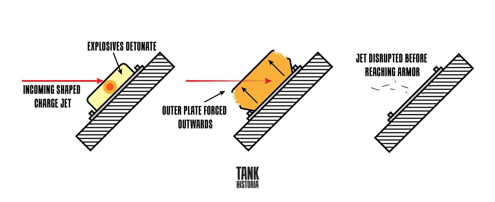
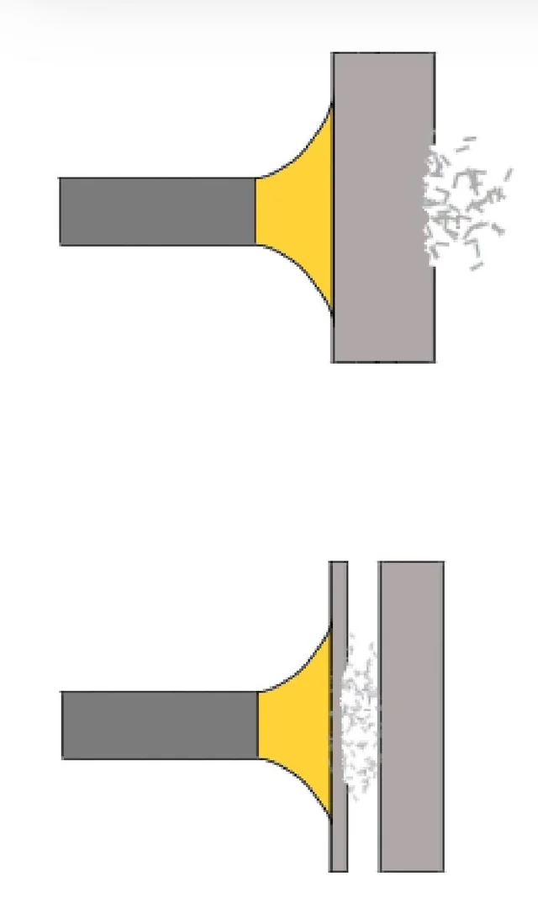
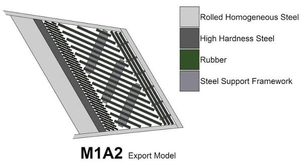
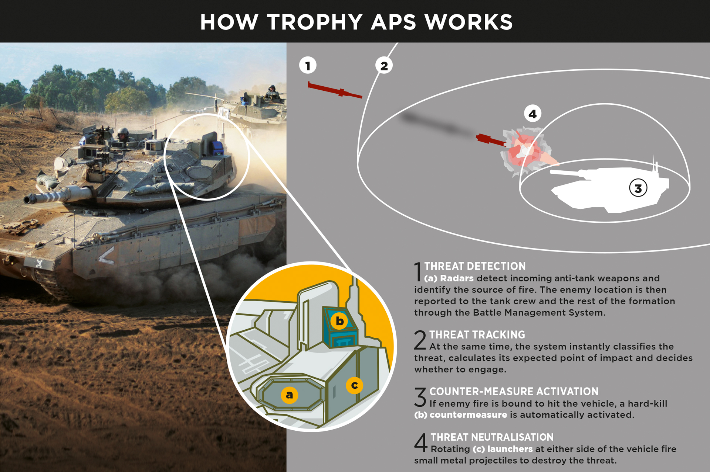

Mistura aço, cerâmica, plásticos e metais leves em camadas estruturais. Dissipa o calor e a energia de ogivas de carga oca (HEAT). Exemplo clássico é o conceito Chobham balístico usado no tanque Abrams e Challenger.

Blocos externos com pequenas cargas de explosivo entre placas de metal. Explodem para fora ao receber um impacto, destruindo o jato do míssil antes de atingir o chassi. Muito comum em tanques russos e soviéticos modernizados.

Estruturas de barras metálicas colocadas ao redor do tanque. Amassam ou prendem foguetes (como granadas de RPG-7) antes da detonação ideal. Protegem áreas vulneráveis com baixo acréscimo de peso.

Camadas intercaladas: Usa uma camada de material elástico (como borracha ou plástico especial) espremida entre duas placas de metal.
Sem explosivos: Diferente da blindagem reativa explosiva (ERA), ela não detona para rebater o ataque.
Absorção de energia: Quando um míssil ou projétil atinge o tanque, o material elástico se comprime e expande rápido, deslocando as placas de metal.
Esse movimento das placas entorta ou muda o ângulo do tiro, cortando a força de penetração da arma inimiga.

Hard-kill (Neutralização Rígida): Destruição ou desvio físico da ameaça no ar por meio de pequenas cargas explosivas, fragmentação ou projéteis direcionados a curta distância.
Soft-Kill: Emissão de sinais infravermelhos, lasers ou granadas de fumaça especial para confundir, cegar ou desviar o sistema de orientação eletrônico do míssil inimigo.
